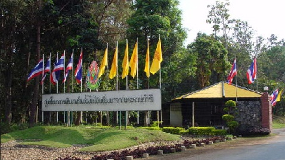

ตั้งอยู่บริเวณอำเภอดอยสะเก็ด จังหวัดเชียงใหม่ ครอบคลุมพื้นที่กว่า 8,500 ไร่ นับเป็นอีกหนึ่งสถานที่ท่องเที่ยวที่น่าสนใจสำหรับคนที่มาเที่ยวเชียงใหม่
ภายในศูนย์ถือได้ว่ามีความเพียบพร้อมโดยมีการวิจัยและพัฒนาป่าที่หลากหลาย ทำให้นักท่องเที่ยวสามารถเห็นภาพแนวทางการพัฒนาป่าได้อย่างชัดเจน โดยมีการวิจัยทางด้านปศุสัตว์และโคนม รวมทั้งเกษตรอุตสาหกรรม ซึ่งนักท่องเที่ยวสามารถชมผลงานวิจัยต่าง ๆ ได้อย่างทั่วถึง
